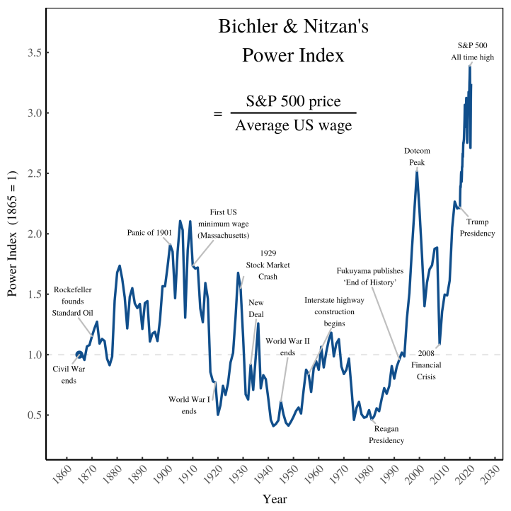

25 Capital as Power
A common definition of power is “the capacity to make another do something that that person would not otherwise do or as the exercise of such a capacity.”

The capitalization of firms indicates their ‘differential power,’ which is their ability to use property rights to further their own economic advantage over workers and other peer competitors. Dominant classes and corporations exploit this differential power to adjust wages, profits, and prices as they see fit, gaining more power over labor along the way.
CasP Theory
Power, even when recognized, cannot be integrated into political economy: (1) it upsets the so-called laws of economics, (2) it decimates value theory, and (3) it makes ‘real’ aggregates unquantifiable.
The theory of capital as power (CasP) is radically different from conventional political economy. In the conventional view, mainstream as well as heterodox, capital is seen a “real” economic entity engaged in the production of goods and services, and capitalism is thought of as a mode of production and consumption. Finance in this approach is either a mere reflection/lubricant of the real economy (the mainstream view), or a parasitic fiction (the heterodox perspective). CasP rejects this framework. Capital, it argues, is not a productive economic entity, but a symbolic representation of organized societal power writ large, and capitalism should be analysed not as a mode of production and consumption, but as a mode of power. In this approach, finance is neither a reflection nor a fiction, but the symbolic language that organizes and reorders – or creates the order of – capitalized power.
Liberals tend to see this separation in black and white: “economy – good; politics – bad”. And that’s hardly a caricature. In the liberal cosmology, the economy – namely the processes of production, consumption, technology, trade, prices and income – is the fertile source of society. This is the horizontal realm of individualism, utility, productivity, frugality, rationality, dynamism and freedom, the sphere where personal initiative and mutually beneficial exchange propel society forward. By contrast, politics – namely the state and its bureaucracies, the law, the police and army – is the vertical domain of authoritarianism and conformism, power and coercion, waste and irrationality, corruption and manipulation.
Prone to mischief, politics should be restricted as much as possible. Ideally, its role should be to assist the economy by providing law and order and filling in for the occasional market failure – and that’s it. In practice, though, politics always ends up doing more than it is supposed to, causing havoc in the process. According to liberals, politics as such cannot produce anything; it can only appropriate and redistribute. And since the economy is assumed efficient to start with, political intervention cannot but distort and undermine this efficiency, making the overall economic pie smaller. The obvious antidote for this mishap is laissez faire: for liberals, the best society is one with the biggest “free” economy and the smallest and least “interventionist” polity.
The Marxist view is different, but not entirely. Like liberals, Marxists too distinguish economics from politics (or base from superstructure). And they too see the economy, particularly production, as the prime mover of capitalism – the sphere where labour creates both the use value that sustains society and the surplus value that capitalists appropriate to propel accumulation. Unlike liberals, though, Marxists view the political sphere not as a hindering distortion, but as a built-in requirement. The formal separation of economics from politics, they argue, legally alienates private property from public control in order to ensure and legitimize the class superiority of capitalists over the rest of society. In this way, economics and politics stand as the two essential pillars of the capitalist regime – the former generates its exploitation, while the latter secures its oppression.
Although liberals and Marxists reject each other’s framework, they appear to agree (albeit for different reasons) that economics and politics are – and must be – distinctly constituted, and that the economy leads with production and politics reacts with redistribution.
And the question is why? Why do political economists right and left insist on retaining the anachronistic separation of economics from politics and the notion that the former dominates the later? You can say that liberal defenders of capitalism benefit from this separation and prioritization, but what do Marxist critiques of capitalism stand to gain from upholding the same view? The answer is largely analytical. As they stand, neither school can afford to rock the boat. Without the a priori separation and pecking order of economics and politics, their ability to model – and even describe – the social reality breaks down.
Politics must be seen as subservient to economics: if they are not, the arbitrary character of politics – and of power more generally – is bound to distort if not totally annul the rational-mathematical automaticity of the perfectly competitive economy; with mathematical rationality gone, liberals lose their universal laws of the economy and Marxists their capitalist laws of value, if not of motion; and with these laws defunct, political economy can no longer claim to be the science of society.
Bichler & Nitzan CasP Website Bichler & Nitzan (2021) Unbrigdeable_CasP_Political_Econly (pdf)
In English, of persons who own a variety of assets that have a certain monetary value, one says that they have a certain wealth. In English, it is not clear how wealth as such should relate to power. The situation is different in German: the direct translation of ‘wealth’ is Vermögen, sometimes even Kapitalvermögen. You say, Mr. Gates has a Vermögen of $100 billion. Now, the word Vermögen is also used more generally to denote the ability to do something, the power to. Indeed, etymologically Vermögen belongs to the same group as the German Macht, which is the direct translation of ‘power’, especially in political contexts. These words trace their etymology to the Indo-European root mag h , which means ‘ability’ or ‘power’, and from which all kinds of related English words, like ‘might’, ‘mechanics’, ‘machine’ and many others, including ‘magician’, derive; there is also the closely related root maĝ h , which means ‘fight’ or ‘struggle’ (Köbler 2014). So in German, the identity of capital and power is already built into the language— and the etymologically English equivalent to Kapitalvermögen would be ‘capital might’. The reader can get a feeling for the meaning of Vermögen by taking an arbitrary report about goings-on in business and replace words like ‘asset’, ‘wealth’ and ‘equity’ with ‘might’. The use of the word Vermögen for financial wealth apparently seems to have started around 1500 (Grimm and Grimm 2019). This was the age of German protocapitalists, most notably Jacob Fugger of Augsburg (b. 1459– d. 1525), whose byname was ‘the Rich’ and who, at the end of his life, controlled much of European silver and copper production, silver being the foundation of the hard money of the age and copper a raw material necessary for making then new weapons of mass destruction, cannons and guns. Fugger and other rich men were able to turn their business success into political influence. For example, Fugger was responsible, i.e. paid for, Charles V to become emperor of the Holy Roman Empire in 1519 (Häberlein 2012; Steinmetz 2016). In an age that was otherwise still feudalist, this new kind of monetized power, Geldvermögen, was reflected in chapbooks, early popular printed story books, notably in the well-known Dr. Faustus, about a magician who seeks power through a pact with the devil, but also in the much less known Fortunatus, which plays out the possibilities its main character has with a purse that contains money each time he opens it (Suchsland 1968).
Asymmetric extension of the market
On the face of it, then, an ever-expanding market system – a “still extending order” – would appear to be good news because it would bring the market’s genuine power of efficient allocation to more and more items. The key problem, however, is that there is a hazardous and unsustainable asymmetry in the pattern of the market’s extension. Consider, for example, that over the last decade my Google search for “carbon emissions” has been commodified and now commands a price – not to me, but to the advertisers bidding for my attention – while my actual carbon emissions remain unpriced despite economists making a serious case for such pricing for nearly half a century, now. Personal data suddenly has a price, but not carbon emissions? The market seems to extend in mysterious ways. The simple explanation is that markets appear where those who have power to make markets would like them to appear. This power is often de facto rather than explicitly granted. Our current socio-economic arrangements empower corporations to reach out and appropriate – to make new property of – new things that may be profitable for them. Such as your internet searches or knowledge of your travel movements. However, corporations also have extraordinary power through lobbying and regulatory obstruction to prevent any new commodification of entities that would result in new costs. Businesses have real powers in the political domain in which markets are nested to determine where markets may or may not extend. So, our still extending – and so still incomplete – market system continues to annex new, previously uncommodified, realms, but in asymmetrical fashion. Markets eagerly reach out to embrace new profit opportunities but rebuff the internalization of new costs. As the decades go by, this ensures that the market, as an institution, becomes ever more extractive or cost- shifting in nature.
“Enabled markets”, not “free markets” Hence, the “free market” advocate cheats when he argues the role of government is principally to uphold property rights, or to “enforce private contracts.” That entirely dodges the critical questions of what entities should receive property rights and how we should collectively decide. “Property” can never be a static domain, both because we make new things and because our ever-expanding knowledge of the world leads us to re-perceive and re-value many existing things. As well, technology permits us to commodify – and so make property of – more and more. The “free market” advocate is in the dissonant position of wishing market actors to be the sole conferees of new property rights while also depending on the government to uphold a general rule of law which is the necessary condition for property to being meaningful at all. Indeed, because of the indispensability of the rule of law, we should be more accurate with our terminology. We never have “free markets”. We only ever have “enabled markets” – markets enabled by an authority capable of upholding the rule of law that gives property meaning. Language matters. “Free markets” is a highly misleading term – routinely deployed as an unassailable universal principle to cloak a more parochial agenda. Too often, what “free market” proponents are really advocating is a system of “enabled markets where we want them and not where we don’t.” Or, put another way, the working slogan of neoliberalism has come to be: “some markets are the solution; government is the problem”.
Government is in the loop! The problem, as should now be clear, is that we have created a narrative and cultural norms that limit governments’ ability to correct the huge gaps in the market’s grasp of real value. We expect government to support the market and governments now find themselves “caught in the loop” of promoting unsustainable economic growth. Governments increasingly use economic performance – even stock market performance! – as a measure of their success, which negates their ability or even interest to introduce new markets that may impose costs. Other reinforcing loops are more tangible, still. For example, corporations use profits to lobby for lax regulations that enhance profits which can be used to lobby for more lax regulations etc. This dynamic – Friedman’s Feedback Loop, call it – has inexorably neutered government’s ability to improve human welfare by modulating market forces
Duncan Austin: Pigou and the dropped stitch of economics RWER95 (pdf)
25.1 Commodities vs Assets
Fix on Cherizola
Suaste Cherizola explores a puzzle in political economy — the neglect of assets. Why, he asks, do most radical political economists focus on commodities, when capitalists themselves care about assets?
Cherizola Abstract
Assets are a crucial concept of the practice and mindset of the capitalist class. Critical analyses of capitalism, however, tend to admit that the exchange of commodities is the foundation of the analysis of capitalism. This article takes a different approach. I claim that assets offer a solid starting point for a scientific research of capitalism. The analysis of assets allows us to elaborate a general description of economic transactions and, to that extent, it lays the groundwork for reconceptualizing the field of finance. These two issues are closely related. The answer to the question, ‘what are assets?’, will give us the coordinates to address the question: ‘what is finance?’
Cherizola Memo
Certainly, finance is an enigmatic domain. Finance is not production, but it seems to be involved in every aspect of it. The so called ‘financial economy’ is usually defined in opposition to a ‘productive’, ‘material’ or ‘real’ economy. This seems to imply, however, that the financial realm is unproductive, immaterial and even non-real. Financial signs seem too ethereal to be considered the basis of capitalism. But they seem too powerful to be considered a ‘mere reflection’ of production.
What are assets made of? How can they turn a group of individuals into a ruling class?
A remarkable fact about assets is the little interest they receive from radical thinkers, who instead have devoted thousands of pages to the analysis of com- modities. This is even more surprising if we consider that capitalists act in the exact opposite way: commodities do not seem to concern them, while assets receive all their attention.
There is an entire academic discipline — finance — dedicated to the study of assets or, more precisely, to interpreting the world as an immense repository of actual or potential assets. The exclusive object of the ruling class: all members of society interact with commodities, but only the capitalists structure their relation with the world through assets.
Commodities originate from the hands of the workers, while assets spring from the minds of capitalists.
The proliferation of entities that have a price without having value represents a major challenge for the alleged sovereignty of the law of value. Under contemporary capitalism, as financial operations extend their territory, and as the production of commodities seems to be more and more subordinated to the financial dynamics, the law of value loses con- trol over the economic system, and the world assumes the form of an immense, unintelligible distortion. The law of value is nowhere and the ‘irrational expres- sions’ become reality itself.
I argue first that assets can only be defined as sets of faculties that are socially sanctioned. In other words, assets are entitlements. Second, I argue that entitlements are the actual object exchanged in an economic transaction.
All assets have these two components: an owner and a set of terms that specify what the owner is entitled to do
For the owner, an asset specifies a set of rights. For the subjects that validate it, an asset is a set of orders.
The performative power of an asset from the will of the subjects committed to enforcing it.
The market is the system in which sets of rights/orders receive a price and are exchanged according to a unit of account called money.Ownership, indeed, is a type of relation that goes from a subject that ‘tells’, to a community that ‘believes’. Saying and believing are the two parts that, as we saw, constitute assets: a subject that claims and a community that abides.
To understand the ontological features of ownership, it must be clearly distin- guished from a closely related phenomenon: possession. Possession designates a physical relation between a subject and a thing. Ownership designates a symbolic relation between human beings.
Generally, the owner of a commodity also becomes its possessor — the benefi- ciary of the use-value of the commodity.
It is the owner who is entitled to activate the social procedures that protect private property
A framework aiming to describe all economic transactions must replace the fictional stories of commodity holders with the study of entitled owners.
Assets must be capable of being stored and presented in some way.
All economic transactions are transformations at the level of ownership.
From this point of view, the claim that markets allo- cate resources is misleading. If the object of economic transactions are symbolic entitlements, what the market allocates is power — and only because it allocates power, it has consequences on the physical distribu- tion of the world.
Since assets have performative power and a monetary value, we can define them as units of capitalized power.
Capitalized power is the system through which the ruling class sustains and reorganizes (in a word: creorders) social reality. Assets are the units of the capitalist mode of power. Capital is the virtual structure in which assets exist. And assets are the particular entities in which capital actualizes.
Capitalization is the elementary algorithm of capitalism.
Understanding finance as a code — a social programming language — allows us to recognize its performative dimension. Like any other language (musi- cal language, architectural language, or written language) financial language makes possible the emergence of new forms of interaction between individu- als. Make it possible for large groups of human beings to coordinate with a precision and on a scale that would be unattainable if that language did not exist. These signs add an irreducible difference to the set of social practices in which they are involved.
Capitalization makes it possible for large groups of human beings — the capitalist class — to coordinate with a precision and on a scale that would be unattainable if that language did not exist.
nominal entities constitute an emergent property of social real- ity. Their existence generates unique and irreducible dynamics. Finance does not produce the world, but it does organize the world of those who inhabit it: it provides the code in which capitalists plan and execute the process of capital accumulation; the code through which capitalists command and workers obey; it organizes productive processes under the double imperative of accumulating capital and retaining control over society. Financial signs do not merely interpret the world, they change it.
Assets do something at least as relevant as the production of things: they allocate the power of deciding what will be produced. Financial activities are ‘produc- tive’ in the sense that they reproduce and reshape power relations. Production is ultimately governed by the ownership of assets. Assets do not produce commodities: they give orders to those who do.
Without finance, there is no accumulation of capital.
Accumulation of capital (as any other mode of power) is both a symbolic and a material process: power is exercised over the world and the bodies of subjects, but the financial code organizes and reshapes the power relations among human beings.
The object of study of a theory of accumulation of capital is not the production of commodities but the reproduction of power.
Finance is the code of the capitalist mode of power — the social pro- gramming language with which the capitalist class reshapes society and controls the process of social reproduction. The fact that assets and other financial entities are ‘symbolic’ does not make them fictions: they are the conceptual instruments of a power technology.
We no longer have to ask how the real economy is connected to the financial economy because, first of all, that separation does not exist. What does exist is the power to allocate resources through the ownership and transfer of entitlements. By abandoning the idea that there is a ‘real economy’, we can concentrate on studying the ‘real domination’.
Assets are the units of capitalized power. Capital is the virtual structure that makes the existence of assets possible. But capital only exists in and through the assets that ‘actualize’ it.
Capitalists can afford to produce more or produce less. But they cannot afford to let the value of their assets fall. To understand what makes the value of assets increase (or decrease) is to understand what capital accumulation consists of.
Casp? How can Capitalism de overthrown?
I love #CasP as a framework for understanding capitalism. But I’m left wondering. How then does one reduce, and eventually get rid of, the power of Dominant Capital?
25.2 Business Power
Babic Abstract
The global financial crisis of 2008, its following bank bailouts, and associated corporate impunity sparked a renewed interest in the concept of the structural power of business and the question of “who rules?” in capitalist societies. This new wave of scholarship mitigated some of the problems of the original, theory-driven discussions from the 1970s and 1980s. But despite significant advancements in the empirical identification of business power, we lack a unified framework for studying its working mechanisms. So-called hybrid approaches, drawing on instrumental and structural power for their analyses, display high potential for such a unified and easily applicable framework. We build on this hybrid tradition and propose a novel model that integrates instrumental and structural power analysis into a basic framework. With this, we recalibrate the often rigid division between instrumental and structural power forms and emphasize the role of perceptions as key for understanding the dynamics of business power over time. We illustrate this parsimonious framework by an analysis of the plans of the Dutch government to abolish a dividend tax in 2018 that would have benefited a number of large multinationals but collapsed before implementation.
Babic Memo
The distinction between instrumental and structural power emerged with the debates on the capitalist state in the 1970s and 1980s. Back then, the key disputes evolved around the question whether the control of (democratic) state apparatuses or the ownership of capital was the ultimate source of power in capitalist societies. So-called instrumentalists argued that by owning the means of production and holding key positions in state institutions, capitalists are able to use these state apparatuses to control and direct policies in favor of capital accumulation. By contrast, so-called structuralists emphasized the privileged position capital enjoys in market societies. States need to cater to business interest as the latter may otherwise divest or lay off workers, which undermines the general welfare of a society. As government officials have to anticipate reactions of businesses, states cannot be an instrument of the class in power, but they serve as stabilizers and managers of capitalist accumulation, especially with regard to crises.
Subdivide structural power in ideational (or discursive) and material structural power.
In a material sense, the structural power argument holds that because it is the capitalists who decide over (dis-)investment, jobs, and prices—and thus over societal welfare—state and society are structurally (i.e., by default) dependent on their decisions. The capitalist structure of market societies limits the agency options of the state insofar as it is not possible to raise taxes indefinitely and at the same time hope for incoming investment, economic growth, and employment of the population. Structural power follows from such a form of structural dependence: capitalists can exert pressure, threaten, and enforce their interests indirectly vis-à-vis state and society, which yields business a privileged position in society.
In an ideational sense, structural dependence manifests itself as a discourse in which taking into account the interest of business then equals taking care of the whole society, which should be the purpose of governmental politics.
In a nutshell, instrumental power is usually regarded as a more direct, observable, and concrete form of power exercise, while structural power is often understood as an indirect, hardly observable, and rather abstract power type.
Hybrid approaches are best-suited for this task, as they integrate empirically observable instrumental and harder-to-observe structural power relations into their explanatory frameworks to explain continuity and change of business power.
Business is likely to engage in “quiet politics” as increased saliency of an issue usually reduces business power.
Instrumentalist accounts tend to focus on the agents—usually businesses—and their capacity to exercise power over the state. Structural accounts, by contrast, focus on the targets over which power is exercised—usually the state—and how they negotiate different conflicting interests,
In capitalist democracies, big business enjoys a direct power relation (or instrumental capacity) over its employees; whereas employees, as citizens, have a direct power relation over the state as they can elect its representatives. If this elected government does not cater to the interests of big business—for instance by lowering taxes—businesses may suspend investment or lay off employees. Those can, in return, express their dissatisfaction by voting for a different administration. In other words, “vote-seeking politicians are dependent on owners of capital because voters are.”
Business would have little leverage through only direct instrumental power such as lobbying, if the indirect power relations were not in place—for example, if businesses lack credible potential to fire workers, move abroad, or influence media campaigns.
Structural power is most likely to be found “where it pushes against substantial opposition in government or in public opinion.”Footnote 56 If preferences of business correlate with public opinion, it is difficult to demonstrate structural influence.
We demonstrate how the gradual erosion of the structural power of Dutch multinationals in the period of 2017–18 only tilted the government toward non-abolishment once it became clear that the Anglo-Dutch firm Unilever could not move headquarters.
The history of the abolishment of the Dutch dividend tax goes back at least until 2005, when the government decided to lower the dividend tax from 25 to 15 percent, and a junior minister of finance claimed that in the long run, the tax would be abolished completely.
In 2009, when the Dutch employer’s association VNO-NCW released a report about the need to attract corporate headquarters to the Netherlands, written by academics from the Rotterdam School of Management. The VNO-NCW leader called the dividend tax a “monster” that had to go. Investigative journalists and activists found out that the report was likely paid for by Shell. The measure was lobbied by the ABUP-club of the “big four” Dutch nonfinancial multinationals: AkzoNobel, Royal Dutch/Shell, Unilever, and Philips.
It soon became clear that it had been mainly the Dutch-British multinationals Shell and Unilever that had contacted politicians and government officials to lobby the measure.Footnote 69 These big multinationals, particularly Unilever, had much leverage over the government at this point: several weeks before the election, both AkzoNobel and Unilever had been subject to attempts of hostile takeovers by the American firms PPG and Kraft-Heinz, respectively. This had triggered renewed concerns about the eventual loss of Dutch “national champions” to foreign investors. Both firms were able to avert the takeover, but in the case of AkzoNobel only by selling its whole chemical business worth more than $10 billion.
If we do not do this it will cost jobs. Then we will get what also happened in Belgium, where, aside from InBev, all big companies have meanwhile left. I do not want to let that happen.
To unite business behind the measure, a key argument in the debate was that also smaller companies such as cab companies and hotels, benefitted from the presence of multinationals in the Netherlands. In a parliamentary hearing, the CEO of Shell Nederland, for instance, said that Shell was responsible for 100,000 hotel stays each year, which was verified by journalists. Such arguments can be regarded as deliberate efforts to create business unity to support the measure.
Until October 2018 the government persistently relied on arguments associated with structural power of business by emphasizing that catering to the interests of multinationals is necessary because they provide jobs and that they might leave the country if the dividend tax remained in place. At the same time, the government was reluctant to admit that the proposal was the result of successful lobby efforts on behalf of business.
It was a shareholder revolt at Unilever that dealt the final blow to the government’s plans. On October 5 it was revealed that Unilever’s shareholders voted against the plans of management to move to Rotterdam and expressed their will to stay in the United Kingdom to avoid being dismissed from the FTSE100 index. This dismissal would automatically delist Unilever from a range of important index tracking funds, which would in turn decrease the company’s share value.
Once this decision became clear, it took the Dutch government only a few hours before it announced it would “reconsider” the tax abolishment plans.
The failed abolishment can be most convincingly explained by the fact that Unilever, as the key multinational in the debate, could no longer pressure the government by promising to move to Rotterdam as a quid pro quo for abolishing the tax.
25.3 Sabotage - Property Rights
Fix
A key aspect of Jonathan Nitzan and Shimshon Bichler’s theory of ‘capital as power’ is that it treats property not as a productive asset, but as a negative social relation. Property, Nitzan and Bichler argue, is an institutional act of exclusion. It is the legal right to sabotage.
What’s new in the theory of capital as power is the focus on capitalist property rights as a form of ubiquitous social ‘sabotage’.
Nitzan and Bichler’s notion of ‘sabotage’ is inspired by the work of political economist Thorstein Veblen. Veblen was a strident social critic who wrote during the early 20th century. He took the concept of ‘sabotage’, which was associated with workers destroying their bosses’ machinery, and inverted it. Workers certainly rebelled against their bosses, but Veblen saw that a more pervasive act of sabotage came from business itself. That’s because property rights gave business the power to exclude workers from doing their job. This ‘legal right of sabotage’, Veblen argued, was the ‘larger meaning of the Security of Property’.
For Veblen, business sabotage mostly took the form of enforcing unemployment (which he called ‘discretionary idleness’). But for Nitzan and Bichler, sabotage is far more general. It is a ubiquitous outcome of private property.
It is easy to highlight specific acts of corporate sabotage. For example, Nitzan and Bichler point to the time (during the early 20th century) when US auto companies systematically bought up electric railways for the sole purpose of dismantling them. (Effective public transit, they surmised, would cut into their profits.) Or more recently, take the time when these same companies developed electric vehicles, but then shredded them (fearing they might undercut the sale of gas guzzlers). You can also see the effects of business-led sabotage in the financial and aesthetic histories of Hollywood cinema. Nefarious business behavior surrounds us.
That said, it is difficult to move from individual instances of corporate sabotage to the more general affect that capitalist property rights have on society. Still, if we want the concept of ‘sabotage’ to be scientific, we ultimately have to measure it. Doing so is our goal here. A win for capitalists ought to come at the detriment of society at large. The sabotage hypothesis is the claim that private property’s exclusionary nature causes more harm than good.